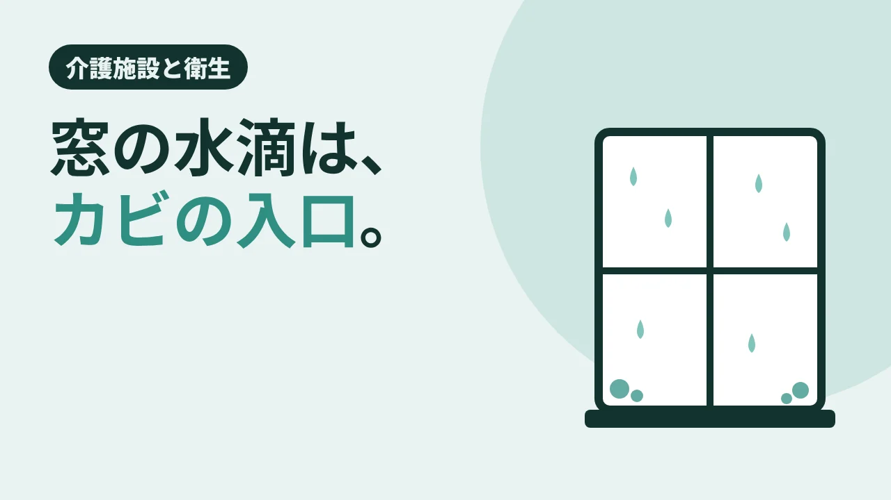

CLEAN CARE JOURNAL / 介護施設と衛生
窓の水滴は、カビの入口。

冬の朝、居室の窓がびっしり曇っている。 暖房をつけ、乾燥が気になって加湿器も回す。冬の施設ではよくある光景です。でも、その窓の水滴は、放っておくと春先のカビの入口になります。今日は、結露とカビの関係を、自治体の資料からほどいてみます。
半分を超える家で、結露
東京都の「健康・快適居住環境の指針」(平成 28 年度改定版)によると、都の調査で、過去 3 年間に結露が出た世帯は 58.4%。そのうち 83.8% は「窓だけ」でした。同じ調査で、過去 3 年にカビが生えた世帯は 33.7%、場所は浴室が 79.7% と最も多かったとされています。
結露は、湿った空気が冷たい面にふれて水滴になる現象です。札幌市の資料は、結露しやすい場所として、暖房している部屋としていない部屋の境目、押入れの中、家具の裏など、空気がよどんで冷えやすい所を挙げています。
カビの「3 つの条件」と、湿度の数字
カビが増えるには、温度・水分・栄養がそろう必要があります。東京都の指針は、温度 20〜35℃ 前後、湿度 70% 以上、皮脂汚れや石けんカス、結露水などの栄養源がそろうと繁殖しやすい、としています。札幌市の資料も、室温 20〜25℃・湿度 70% 以上・暗い場所を挙げています。
湿度の目安は、資料によって言い方が少し違います。東京都の指針は「相対湿度が 60% を超えるとカビやダニが発生しやすくなる」とし、室内は 40〜60% の範囲を目安に、過度な加湿・除湿を避けるよう書いています。板橋区の資料も、カビを増やさないには湿度を 60% 以下に保つことが有効としています。暖かい部屋の窓が冷えれば、部屋全体の湿度がそれほど高くなくても、窓のそばでは水滴になります。
どんでん返し:乾いたぞうきんと掃除機は、逆効果のことも
カビを見つけたら、すぐに拭き取りたくなります。ところが札幌市の資料は、乾いたぞうきんでこすったり、掃除機をかけたり、いきなりスプレーを吹きかけたりすると、胞子が飛び散って広がると注意しています。よく絞ったぞうきんで静かに拭き取る、というのが同市の説明です。東京都の指針も、掃除機を直接かけると胞子が飛ぶとして、薬剤を使うときは窓を開けて換気し、ゴム手袋やマスクで肌を出さないよう書いています。
そしてもう 1 つ。塩素系のカビ取り剤と酸性タイプの洗浄剤を混ぜると、有毒な塩素ガスが出ます(札幌市・板橋区・東京都の資料がそろって注意しています)。拭いても、元の環境が変わらなければ短い期間でまた生える、とも札幌市は書いています。カビ取りは「取る」より、「生えにくい状態に戻す」ほうが本題なのかもしれません。
結び:水滴を、その日のうちに
窓の水滴は、毎朝できて、毎朝消えていくように見えます。けれど窓枠やサッシのすき間に残った水は、ほこりや汚れと一緒にカビの栄養になります。派手な作業ではありません。拭く、空気を動かす、家具を少し壁から離す。冬の居室を守るのは、その繰り返しです。
現場では
介護施設の居室は、暖房がついている時間が長く、体を冷やさないよう加湿も欠かせません。だからこそ、窓・サッシ・家具の裏・押入れのような結露しやすい場所を、清掃のときに見る場所の候補に入れておくことになります。資料には、家具を壁から約 5cm 離す(板橋区)・5cm 以上離す(東京都)、押入れにすのこを敷くといった工夫も挙げられています。加湿と換気の加減や、薬剤を使うかどうかは、施設の方針と入居者さんの体調に合わせて決めることです。広い範囲にカビが出ている場合は、札幌市の資料も専門業者への依頼を挙げています(介護施設の清掃・クリニックの清掃・加湿器の水の読みもの)。
今日の持ち帰り
- 東京都の調査では、過去 3 年に結露が出た世帯は 58.4%、そのうち 83.8% は窓だけ。結露水はカビの栄養にもなる。
- 湿度 60% を超えるとカビやダニが増えやすい(東京都)。目安は 40〜60% で、加湿も除湿もやりすぎない。
- カビは乾いたぞうきんや掃除機でこすらず、よく絞ったぞうきんで静かに。塩素系と酸性の洗浄剤は混ぜない。
出典:東京都「健康・快適居住環境の指針」平成 28 年度改定版(11〜12 ページ:湿度 60% 超でカビ・ダニ、目安 40〜60%/19〜20 ページ:結露の場所、都の調査で結露 58.4%・窓のみ 83.8%、防止策、家具は壁から 5cm 以上/21〜22 ページ:カビの条件 20〜35℃ 前後・湿度 70% 以上、カビ 33.7%・浴室 79.7%、除去時の換気・手袋・マスク、掃除機の直接使用を避ける、塩素系と酸性の混用の危険)／札幌市保健所「結露・カビ対策」(2026 年 8 月 4 日更新)(結露しやすい場所、室温 20〜25℃・湿度 70% 以上、よく絞ったぞうきんで静かに拭く、乾いたぞうきん・掃除機・いきなりのスプレーを避ける、再発、専門業者、混用の危険)／板橋区「室内の空気環境 カビを増やさないために」(2020 年 3 月 11 日更新)(湿度 60% 以下、家具は壁から約 5cm、混用の注意)。2026 年 11 月 11 日閲覧。
クリーンケア専用ダイヤル070-3220-4946
※営業・勧誘のお電話はご遠慮ください